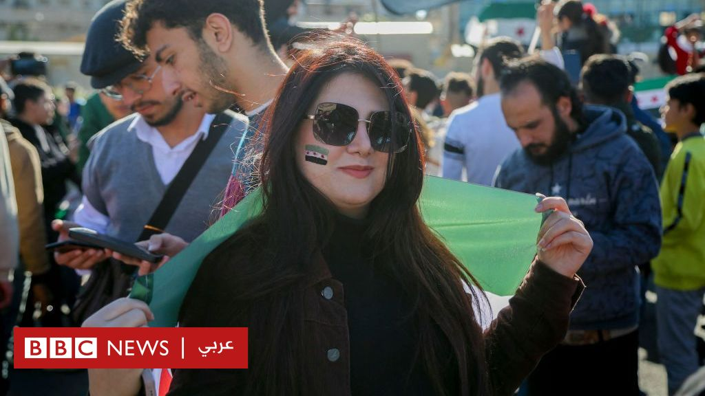

مخاوف النساء السوريات تتصاعد
15 يناير 2025 - 16:34 بتوقيت أبوظبي
رغم تعهد الإدارة السورية الجديدة برئاسة أحمد الشرع بحماية حقوق المرأة وتعزيز دورها، تعيش العديد من النساء السوريات حالة من القلق والترقب.
تكليف أول امرأة برئاسة البنك المركزي السوري مؤقتا
30 ديسمبر 2024 - 16:00 بتوقيت أبوظبي
أفادت وسائل إعلام سورية بتكليف ميساء صابرين بتسيير أعمال البنك المركزي السوري، وهي أول امرأة تشغل هذا المنصب.
"صورة مغايرة".. الجولاني يلتقي وفدا نسائيا سوريا أميركيا
27 يناير 2025
التقى رئيس الإدارة السورية الجديدة أحمد الشرع الملقب بأبو محمد الجولاني، بوفد نسائي من الجالية السورية في الولايات المتحدة.

بين آمال كبيرة وحرية منشودة، كيف ترى السوريات واقعهن تحت الإدارة الجديدة في سوريا؟
7 يناير 2025
أثار انتشار مشهد أحمد الشرع مع ليا خيرالله - المرأة السورية التي طلبت التقاط صورة معه فطلب منها تغطية رأسها - تساؤلات حول مستقبل حقوق النساء في سوريا.